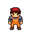
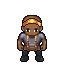
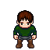
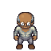
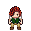
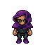
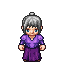

E06 ? Casa 1 e anexo
Moradia de um mecânico genérico; anexo reservado ao seu trabalho doméstico, sem abrir nova loja.

Mec?nico gen?ricoTorre compacta e anexo de metal combinam com manutenção; distribui um figurante sem inventar parentesco.
Acesso do anexo ainda não confirmado; não criar rotina através dele antes da remarcação.
E05 ? Casa 2
Casa de Sula, Pipo e duas crianças ainda sem nome.
Crian?a sem nome A ? sprite pendente
Crian?a sem nome B ? sprite pendente
Catálogo afirma quatro pessoas na casa de Sula e Pipo morando com ela. Duas entradas podem servir a uma só moradia.
Vínculo familiar vem do catálogo, não de falas já implantadas. As duas crianças precisam de variantes próprias se forem mostradas. Uma entrada externa segue sem coleta.
E10 ? Casas 3 e 4
Casa 3: operário genérico. Casa 4: Homem da Fila.

Oper?rio gen?rico
Homem da filaMantém duas moradias independentes. O piloto da Casa 3 serve a um morador sem quest; Homem da Fila continua encontrado no poço.
A rotina não deve removê-lo da fila antes das conversas necessárias.
E12 ? Casa do protagonista
Lip e Apollo, vínculo já montado.
CasaLip tem ligação existente na City e contrato de história próprio.
Preservar cena/puzzle; não mudar a localização para satisfazer a expressão antiga 'terceira à direita'.
E11 ? Casas 5 e 6
Casa 5: Tácio. Casa 6: idoso genérico.

Idoso gen?ricoDuas moradias independentes; Tácio trabalha no mercado e visita a oficina à noite. Não confundir idoso genérico com Onofre.
Não representar a filha de Tácio morando aqui; fontes divergem sobre o destino dela.
E09 ? Casa maior em L
Galpão da Guilda; Bruna como responsável. Operário da Casa 3 pode trabalhar aqui.
Oper?rio gen?rico
Maior área para triagem, quadro de tarefas e oficina; cria percurso de trabalho com destino real.
Salas de estar geradas são bases visuais: adaptar para a Guilda antes da montagem funcional; não tratar sofá como balança ou forja. A moradia de Bruna não é definida pela fonte; alojamento anexo é só possibilidade.
E08 ? Prédio com placa e duas entradas
Estalagem do Cano Torto; Nilce atende/mora no prédio. Zeca dorme aqui de manhã, em quarto diferente do 3.
Zeca ? sprite pendente
Placa, dois volumes e proposta de piso superior favorecem recepção e quartos. Fonte já liga Zeca à estalagem.
Definir corredor/seis portas e reserva do quarto 3; não atribuí-lo a Aurélio ou ao Zeca por suposição. Posto de Benta fica no exterior adjacente, sob toldo, sem consumir uma das portas como consultório.
E16 ? Domo / prefeitura
Equipamento comunitário: reuniões pequenas, registros e uso coletivo. Sem morador fixo ou prefeito inventado.
Sem morador fixo.
Usuário identifica o domo como prefeitura; enredo diz que Ferrovale não tem prefeito. Conservar prédio cívico sem criar governante.
Assembleia da Sessão 7 permanece em espaço aberto; Nadir é visitante condicionada à história, não moradora do domo.
E00 ? Casa 7 / torre alaranjada
Apartamento do vendedor genérico; hall/patamar comuns.

Vendedor gen?ricoReserva residência urbana ao figurante sem duplicar a identidade de Tácio ou Sula.
Seu ponto comercial externo ainda não está definido; não criar loja funcional ou estoque por causa da sprite.
E01 ? Casa 8 / torre azul
Apartamento de uma pessoa técnica genérica, usando o modelo hacker_01.

Pessoa t?cnica (hacker_01)Metal e apartamento compacto combinam com bancada/eletrônica; profissão visual não cria quest automaticamente.
Sem fala ou função de hacking implantada; nome e personalidade permanecem abertos.
E02 ? Casa 9 e garagem
Moradia de Quirino e oficina na garagem, cada acesso externo preservado.
Garagem e ferramentas favorecem oficina; catálogo coloca Quirino nos fundos do mercado.
Posicionar setor do mercado de modo coerente com a oficina; não afirmar que viaduto/mercado já estão desenhados ou montados neste lote. Sem inventar porta interna entre casa e garagem.
E03 ? Casa grande / possível mansão
Proposta: antiga casa de Ivo e Célia, hoje vazia; Ivo continua na Estação 7.
Diálogos da Sessão 2 exigem casa vazia com foto, registros e bilhete. Isso dá função à casa-chave sem inventar novo personagem rico.
A fachada é escolha de design, não prova de que Ivo era rico. Adaptar um espaço aos cadernos/foto/bilhete; Célia aparece como memória/foto, nunca NPC residente vivo.
E04 ? Geminado azul
Dara numa unidade; a vizinha beneficiada pela divisão da água na outra.

Vizinha de Dara (modelo idosa_01)Vizinhança física sustenta a terceira parte da cota; duas entradas justificam duas moradias.
A vizinha pode usar idosa_01 como proposta visual. Não assumir que 'terceira parte' exige terceiro apartamento; diálogos da quest falam da água.
E13 ? Casa 10 / torre azul e ocre
Apartamento de morador técnico genérico, usando cientista_01.
Morador t?cnico (cientista_01)
Preenche uma torre sem deslocar personagem que pertence à Cratera ou Prumo.
Jaleco não o torna Benta nem cria laboratório/quest. Hall e patamar são áreas comuns.
E14 ? Duas unidades e porão
Moradias propostas de Benta e vigia genérico; porão compartilhado sem morador.
Benta ? sprite pendente
Vigia gen?rico
Permite ocupações distintas preservando as três entradas; Benta trabalha junto à estalagem, não neste porão.
Benta ainda precisa de sprite própria. Vigia genérico não substitui a identidade de Zeca. Nenhuma ligação interna com o porão presumida.